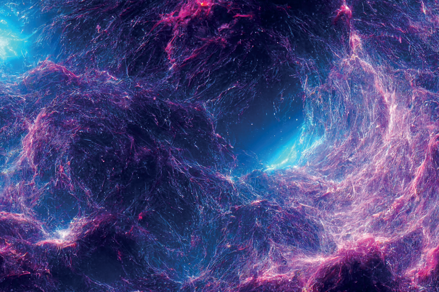

Published: May 2, 2023
Without the Sun, life on Earth would likely never have formed. But how did the Sun, and the other 100 billion stars in our galaxy, come to be? The process behind the formation of stars is an intricate dance that is influenced by complex forces and interactions. Using a new generation of state-of-the-art telescopes, Professor Snežana Stanimirović, from the University of Wisconsin-Madison in the US, is hoping to unravel the mysteries of this cosmological choreography.

In the middle of winter, when rain is pouring down and a fierce gust of wind turns your umbrella inside out, it can be easy to forget that the Sun exists! But, even when you are soaked through and chilled to the bone, you should be grateful that we have our very own ball of hot plasma watching over us. Without the Sun, life on Earth would not exist.
Our sun is one of roughly 100 billion stars in the Milky Way. In about 5 billion years, it will expand into a red giant, swallowing the Earth along with all the life that it helped create, before eventually shrinking into a white dwarf and fizzling out, roughly 8 billion years from now.
That is how it all ends, but how did it begin? The Sun formed around 4.5 billion years ago when a giant cloud of gas and dust collapsed in on itself under the force of its own gravity. This is the process by which all stars form, but there is still a lot that we do not know about it. Professor Snežana Stanimirović from the University of Wisconsin-Madison has been working with two surveys, GASKAP and LGLBS, to try and shed some light on the processes of star formation.
The Galactic Australian Square Kilometre Array Pathfinder survey (GASKAP) makes use of a giant synthesis array in Australia. A synthesis array is a collection of radio antennae that work together to act as one huge telescope. The ASKAP telescope is made up of 36 antennae spread out over 6km2. Each antenna is equipped with a phased array feed (PAF) made up of 188 receiver elements that detect radio waves that have been emitted from astronomical sources like stars or galaxies.
The PAF technology is brand-new in radio astronomy and provides a significant upgrade on traditional radio telescopes, which have only a few receivers, at most. As a result, the ASKAP telescope can capture images of a much higher quality. ASKAP can image large swathes of the night sky faster and images or a large field of view; now they can do both.
“GASKAP is providing a super high-resolution view of how interstellar clouds form and evolve, maturing to the point of making stars,” says Snežana. The incredibly detailed images that GASKAP produces will allow her to study many important physical processes for the first time. These processes are involved in the formation of stars and have a big impact on how galaxies evolve and change.
For the last four years, the GASKAP survey has been working on pilot studies. These are trials that allow researchers to test out their observation and data processing strategies. So far, researchers have surveyed two of our closest galactic neighbours, the Small and Large Magellanic Clouds. These two galaxies are both part of the same galactic cluster as the Milky Way, which means they are close enough for ASKAP to view them in great detail.
As the pilot studies draw to a close, Snežana and her colleagues are preparing to start surveying much larger areas of the sky. They plan to map a large area of the Milky Way, as well as something known as the Magellanic Stream. This is a long tail of gas extending from the Magellanic Cloud galaxies that has been formed by interactions between them and the Milky Way. These interactions are likely to have a big effect on how the galaxies evolve.
One of the main barriers to star formation is something known as stellar feedback. This is turbulence generated by the activity of stars that prevents clouds of gas collapsing under their own gravity and forming new stars. Stellar feedback can be caused by fast-flowing streams of particles that are emitted by stars, known as stellar wind, or by stars exploding into supernovae. “The basic idea is that by kicking the gas around, turbulence makes it harder for gravity to cause clouds to collapse and form stars,” says Snežana.
LGLBS will also study radio wave emissions from these galaxies and observe how interstellar gas moves around and interacts with its surroundings. This is a massive project that will likely require over 2000 hours of observations and produce an immense amount of data.
Both the GASKAP and LGLBS surveys involve marathon amounts of observation time and will produce about a million gigabytes of data. These data sets will allow Snežana and her team to investigate scientific questions from a diverse range in more detail than traditional radio telescopes. This is a huge step forwards as, traditionally, researchers would have to choose between high resolution of disciplines. “To handle the observations, data processing and the highly diverse areas of science, large international teams with a broad range of technical and scientific expertise are needed,” explains Snežana. Large supercomputers will be required to process all these data and whole teams of scientists will be needed to manage these systems.
What are the overall aims of these projects?
Snežana hopes to uncover the mysteries of the star formation process. There are three main questions that she hopes to provide answers to: how is atomic gas distributed within galaxies, and how does this change in different galaxies? What drives interstellar turbulence, and how does this affect the distribution of gas within galaxies? And how do star-forming clouds of gas accumulate from this interstellar atomic gas?
Both GASKAP and LGLBS are producing images that will help Snežana answer these questions. “The survey is still collecting observations and processing the data we have so far,” she says. “This requires a lot of work and the use of very powerful supercomputers.” Snežana and her fellow researchers are starting to get some early results, and there is a lot of fascinating work still to come.
A strophysics is the branch of science that seeks to understand the nature of the Universe and the things in it by applying the methods and principles of physics and chemistry. Fields of research in astrophysics include the lifecycle of stars, the formation of planets and the evolution of galaxies. By exploring these topics, astrophysicists can help us understand our place in the Universe.
With the recent launch of NASA’s James Webb Space Telescope and the development of other next-generation telescopes, the field of astrophysics finds itself at an exciting moment. Future astrophysicists will have the chance to work on some ground-breaking projects. Studying the formation of exoplanets, observing the oldest galaxies in the Universe and exploring new fields such as dark matter, dark energy and gravitational waves are all research opportunities that may be available to new astrophysicists.
Success in this field is not determined solely by your understanding of maths and physics. Good scientists are able to communicate well, collaborate with others and ask for help when they need it. Being curious and asking questions is crucial to making new discoveries. Snežana also emphasises that keeping active outside of your career is important. “Especially during more stressful career stages, exercising, walking or enjoying a hobby really helps to get a fresh perspective and relax,” she says.